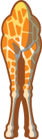
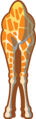

Kirahvien korkeudet
Pue matalimman kirahvin kaulaan huivi.
Pue kahden keskenään lähimmät korkeudet omaavan kirahvin kauloihin huivit.
Huivi puetaan/riisutaan klikkaamalla kirahvin alla olevaa laatikkoa.
Jotkut kirahvit ovat lähes samankorkuisia. Mittaa kirahvin korkeus tarkemmin klikkaamalla sen yläpuolella olevaa nuolta.
Mittaa vierekkäisten kirahvien korkeusero klikkaamalla niiden välissä olevaa nuolta.
Voit raahata kirahveja eri järjestykseen.


 

 
